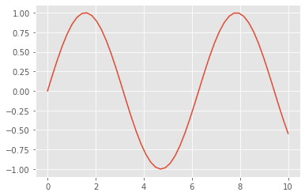

GlueCode¶
from myst_nb import glue
c0 = []
t_insert = %timeit -o -n3000 -r100 c0.insert(0, 'a')
The slowest run took 176.26 times longer than the fastest. This could mean that an intermediate result is being cached.
40.7 µs ± 23.4 µs per loop (mean ± std. dev. of 100 runs, 3000 loops each)
glue('t_insert', t_insert)
<TimeitResult : 40.7 µs ± 23.4 µs per loop (mean ± std. dev. of 100 runs, 3000 loops each)>
c1 = []
t_append = %timeit -o -n3000 -r100 c1.append('a')
44.4 ns ± 13.4 ns per loop (mean ± std. dev. of 100 runs, 3000 loops each)
glue('t_append', t_append)
<TimeitResult : 44.4 ns ± 13.4 ns per loop (mean ± std. dev. of 100 runs, 3000 loops each)>
#Verify that both lists are the same
assert all([a == b for a, b in zip(c0, c1)]), "Answers differed?"
# Report the ratio of execution times
print(f"\n==> (insert time) / (append time) for 300,000 ops: ~ {t_insert.average/t_append.average}x")
==> (insert time) / (append time) for 300,000 ops: ~ 916.5227678625855x
glue('t_ratio', (t_insert.average/t_append.average))
916.5227678625855
import numpy as np
import matplotlib.pyplot as plt
plt.style.use('ggplot') # Displays graph in the style of R's ggplot
x = np.linspace(0,10)
y = np.sin(x)
fig = plt.plot(x,y)

glue('basic_sin', fig, display=False)